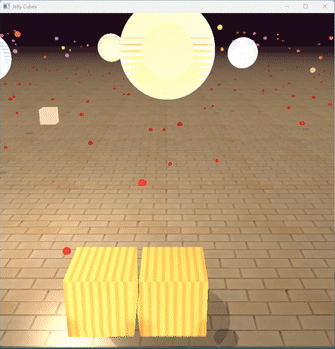
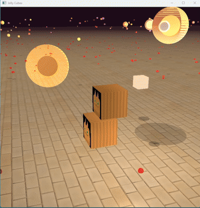

This project implements a real-time soft-body simulation of deformable jelly cubes using OpenGL for rendering and a position-based dynamics (PBD) framework for physics. The simulation supports interactive gravity-driven motion, elastic deformation, and collisions within a container environment. Each jelly cube is modeled as a volumetric mass–spring system with adjustable stiffness, resolution, and damping, enabling tunable material behavior from soft gelatin to rigid structures. The system features accurate broad-phase and narrow-phase collision detection using axis-aligned bounding boxes (AABBs) and particle–plane constraints. Rendering incorporates texture mapping, transparency support, and lighting, producing visually realistic jellies that bounce and deform under physical forces. The modular class design—covering mesh generation, GPU buffer management, camera control, and physics integration.
Inspired by homework 4 part 1 and 2, we built an evenly spaced 2d grid of point-masses, linked them with structural, shearing and bending springs, and compute the total spring and damping forces on each mass. We implemented a Verlet integrator under gravity and enforce Provot's 110% stretch constraint.'
Below is an example of the current program:
|
 |
 |
On each jelly, springs uniformly connect point mass on each face in a grid pattern and the diagonals on each face, the springs also connect opposing vertices as well as faces to prevent "pancaking"
Using Verlet Integration we updates the mass positions over time in a stable way without explict velocities, particles' positions are stored as p-current and p-previous, new positions are calculated as p-new = p-cur + (p-cur - p-prev) + a * dt^2, where (p-cur - p-prev) serves as implict velocity.
We looped over all springs in the jelly to satisfy the spring constraint of |Pa - Pb| = rest length, where the correction to mass positions are weighted by the inverse of their mass, the correction is calculated multiple times per frame for convergence.
Collosion with the ground is done by clamping between particle positions and z-coordinate of the ground, collision between jellies is done by the axis-aligned bounding-box algorithm, where each time a jelly's position is being updated, its bounding box is updated with its new min and max particle position, the collision is detected by checking against the other jelly's bounding box for overlapping interval. After a collision is detected the program then decides which shortest direction to push the jelly in to reslove collision. This is O(1) time and gets the job done.
When the mouse clicks on a jelly, a ray is cast from the camera through the cursor position into the scene. If the ray intersects the jelly’s axis-aligned bounding box, the intersection point is calculated. The closest particle on the jelly to this point is selected, and a pin constraint is applied to it during the Position-Based Dynamics step. The pin pulls the particle toward the ray’s target position each frame, with adjustable stiffness, while the rest of the jelly deforms naturally due to spring constraints. This allows interactive dragging of any point on the jelly surface, creating realistic stretching and squashing effects.